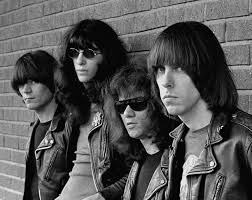
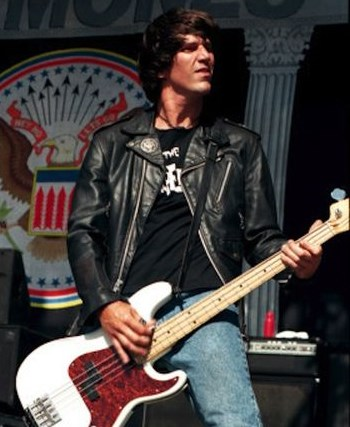
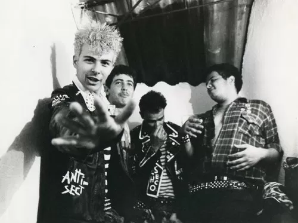
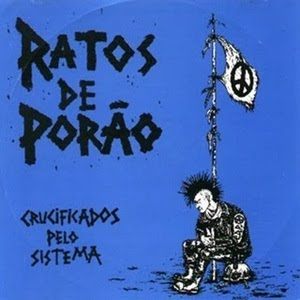
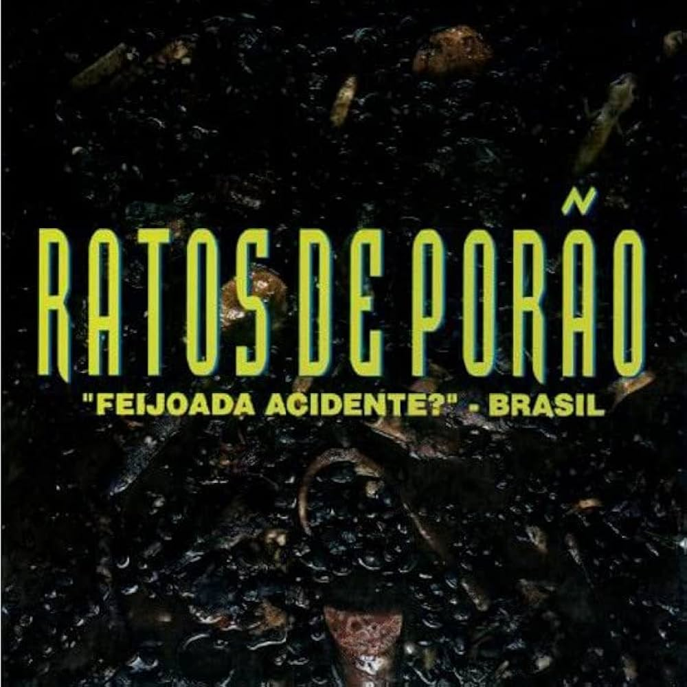

A história dos Ramones é a própria história do nascimento do Punk Rock nos Estados Unidos. Formada em 1974, em Forest Hills, Queens, Nova York, a banda se tornou um ícone com sua sonoridade rápida, simples, minimalista e cativante.
O Começo e a Formação Clássica (1974–1978)
O embrião da banda se formou com os amigos de infância Jeffrey Hyman (Joey Ramone), John Cummings (Johnny Ramone) e Douglas Colvin (Dee Dee Ramone).
No início, Dee Dee era vocalista/baixista e Joey tentava conciliar a bateria e o vocal. Devido às limitações, Joey passou a ser o vocalista principal e Dee Dee ficou apenas com o baixo.

Os irmãos de McCartney
Eles adotaram o sobrenome "Ramone" em homenagem a Paul McCartney, que usava o pseudônimo "Paul Ramon" ao se hospedar em hotéis.
A formação se completou quando Thomas Erdelyi, que trabalhava no estúdio onde eles ensaiavam, assumiu a bateria, tornando-se Tommy Ramone.
Formação Original: Joey (Vocal), Johnny (Guitarra), Dee Dee (Baixo) e Tommy (Bateria).
A primeira apresentação foi em 30 de março de 1974.
1976: O Álbum de Estreia e a Revolução
O primeiro álbum, auto-intitulado "Ramones" (1976), foi lançado após assinarem com a Sire Records. Gravado com um orçamento limitado, ele definiu o som do punk americano com músicas curtas e aceleradas como "Blitzkrieg Bop", "Judy Is a Punk" e "I Wanna Be Your Boyfriend". O grito de guerra "Hey Ho, Let's Go!" se tornou instantaneamente icônico.
Em 1977, lançaram "Leave Home" e "Rocket to Russia". O último é aclamado e contém clássicos como "Sheena Is a Punk Rocker" e "Rockaway Beach".
1978: Primeira Mudança
Tommy Ramone, cansado das turnês, deixou a banda amigavelmente para se concentrar na produção musical. Foi substituído pelo baterista Mark Bell, que se tornou Marky Ramone.
Lançam "Road to Ruin", que trouxe a clássica "I Wanna Be Sedated".
Anos 80 e a Busca por Sucesso (1980–1989)
A banda buscou um som mais "pop" e trabalhou com o produtor lendário Phil Spector no álbum "End of the Century". O álbum, embora controverso para alguns fãs por ser mais polido, gerou o hit "Do You Remember Rock 'n' Roll Radio?" e a participação no filme Rock 'n' Roll High School.
O Final da Linha (1989–1996)
O baixista fundador Dee Dee Ramone deixou a banda para seguir carreira solo, mas continuou a escrever músicas para o grupo.
Ele foi substituído por Christopher Joseph Ward, que se tornou C.J. Ramone. C.J. trouxe nova energia e tocou no último período da banda, sendo muito querido pelos fãs.

1995–1996: O Último Álbum e a Despedida
Com a saúde debilitada de Joey Ramone, a banda decidiu parar de fazer shows.
Em 1995, lançaram seu 14º e último álbum de estúdio, "Adios Amigos".
Em 1996, os Ramones fizeram um show de despedida em Los Angeles, encerrando uma carreira de 22 anos.
RATOS DE PORAO
01/12/2025

Fase Punk e Primórdios (1981–1984)
No início da década de 1980, influenciado pelo movimento punk que começava a tomar forma em São Paulo, Betinho Massetti (baterista da banda) formou o Ratos de Porão com seu primo João Carlos Molina Esteves (o Jão, vocalista e guitarrista) e o amigo Jarbas Alves (o Jabá, baixista) no distrito de Vila Piauí.
Em 1982, participam do festival O Começo do Fim do Mundo, que reuniu vinte bandas no SESC Pompeia, em São Paulo, tornando-se um marco do movimento punk brasileiro.
Em 1983, já com Mingau na guitarra, fizeram seu primeiro registro musical no split SUB. Após o lançamento do álbum, Betinho decide sair, o que fez Jão passar a ser baterista. João Gordo, conheceu a banda durante as gravações da compilação e logo assumiu o microfone.
Em 1984, lançam o álbum de estreia, Crucificados pelo Sistema, álbum pioneiro de hardcore. Nessa época, os punks paulistanos começaram a chamá-los de "traidores do movimento", pois o Ratos trocou o punk tradicional pelo hardcore. A época da gravação do álbum coincidiu com o chamado "fim do movimento punk de São Paulo", devido a brigas e rixas de gangues. Em razão disso, não houve show de lançamento e o Ratos de Porão se desfez por um breve período.

Crucificados pelo Sistema não é apenas o álbum de estreia do Ratos de Porão; é uma pedra fundamental da história do punk e do hardcore na América Latina.
Ainda em 1984, a faixa "Parasita" saiu na coletânea internacional World Class Punk, lançada em K7 pelo selo ROIR de Nova Iorque. Como ocorria com a maioria das coletâneas gringas de bandas punk da época— e muitas traziam faixas de bandas brasileiras — só souberam de sua participação após o lançamento. E, até hoje, não receberam nada por isso, apesar de a coletânea ter dado um bom lucro. Por outro lado, foi útil para divulgar o Ratos de Porão pelo mundo. Muitos anos depois, essa coletânea foi relançada em CD.
Voltaram em 1985, com a formação original (com Jão assumindo os vocais e guitarra, Jabá no baixo e Betinho na bateria) e gravaram um álbum split com o Cólera, ao vivo no Lira Paulistana durante o show de lançamento do LP Tente Mudar o Amanhã.
Fase Crossover Thrash
Após o lançamento do split com o Cólera, João Gordo retorna à banda com a proposta de fazer um som mais crossover thrash, influenciado principalmente por bandas como D.R.I. e Broken Bones. A formação com Gordo, Jão, Jabá e Betinho participa da gravação da coletânea Ataque Sonoro, que se torna a única gravação em que Gordo e Betinho participam juntos. Após o lançamento da coletânea, Betinho sai da banda de forma definitiva.
Para substituir Betinho, chamam Spaghetti e, em 1986, lançam pela gravadora Baratos Afins o álbum Descanse em Paz. Devido à influência do thrash metal no som, a banda foi chamada de traidora por alguns punks.
O álbum Descanse em Paz do Ratos de Porão, lançado em 1986, é uma peça fundamental e muitas vezes subestimada na história da banda, pois marca o ponto de inflexão entre o Hardcore Punk cru de seu início e o Crossover Thrash que os consagraria internacionalmente.
Em 1987, assinam com a Cogumelo Discos, gravadora célebre por lançamentos de Metal, e lançam o álbum Cada Dia Mais Sujo e Agressivo, em duas versões: uma em português e outra em inglês. O trabalho marca a parceria com os integrantes do Sepultura, na época, Max Cavalera e Andreas Kisser, que participam na faixa “Morte e Desespero”.Nessa época, também fazem o primeiro show com bandas dos gêneros musicais punk e metal do Brasil, como o Sepultura. Esse show criou polêmica, pois devido a rixas na época entre as duas tribos, comentou-se que iria haver brigas durante a apresentação, mas o show ocorreu sem nenhum conflito.
Devido a divulgação de Cada Dia Mais Sujo e Agressivo no exterior, a banda assina com a gravadora holandesa Roadrunner Records, e em 1989 gravam na Alemanha, o álbum Brasil, produzido por Harris Johns, também em duas línguas, com a capa desenhada pelo autor de quadrinhos underground paulistano Marcatti,que alguns anos depois lançou duas edições do R.D.P. Comix, uma revista de histórias em quadrinhos do Ratos de Porão.
Em 1990, gravam Anarkophobia, novamente na Alemanha, com o mesmo produtor e mesmo desenhista de capa de Brasil, incluindo um cover de "Commando" dos Ramones e realizam uma turnê europeia para divulgação do álbum.
Em 1992, lançam o álbum RDP ao Vivo, gravado ao vivo em São Paulo, com o baterista Boka (ex-Psychic Possessor) no lugar de Spaghetti, que saiu da banda após a turnê europeia.
Em 1993, gravam Just Another Crime in... Massacreland, o único álbum com a maioria das músicas em inglês, com exceção de "Suposicollor" em português, "Quando Ci Vuole, Ci Vuole!" em italiano e "Ultra Seven no Uta" (uma versão da música-tema do seriado tokusatsu Ultraseven) em japonês. Esse foi o álbum mais voltado para o thrash metal da banda, incluindo um cover de "Breaking All the Rules" de Peter Frampton. Também gravam a música "Videomacumba" para a coletânea No Major Babes do jornalista Marcel Plasse, pela Caffeine Records.
Em 1995, lançaram Feijoada Acidente?, um tributo a bandas punk brasileiras e internacionais. O título é uma paródia a The Spaghetti Incident?, disco do Guns N' Roses que também é um tributo.

O título, "Feijoada Acidente?", é uma piada com a capa do famoso álbum da banda D.R.I., Dirty Rotten Imbeciles (1983), que trazia uma feijoada de restos em sua capa, e o conceito de que o som Crossover seria um "acidente" da cena punk.
Jello Biafra - Sepultura & Ratos de porao - Holiday in Cambodia
De 2006 a 2007, os diretores Fernando Rick e Marcelo Appezzato, filmaram o documentário "Guidable - A Verdadeira História do Ratos de Porão", com vídeos antigos inéditos e com entrevistas de todas as formações da bandaA formação atual e mais recente do Ratos de Porão é composta por quatro membros.João Gordo: Vocal , Jão: Guitarra ,Juninho: Baixo e Boka na Bateria
O Ratos de Porão, mesmo após mais de 40 anos de carreira, continua extremamente ativo, tanto em estúdio quanto em apresentações ao vivo.
Seus trabalhos atuais recentes focam em novos lançamentos e uma agenda intensa de shows, inclusive turnês internacionais.
The Smiths
20/11/2025
A Gênese e a Parceria Improvável (1982)
A banda nasceu em Manchester, Inglaterra, em 1982, do encontro entre duas personalidades contrastantes.
Steven Patrick Morrissey (Vocal e Letras): Um jovem reservado, leitor voraz (fã de Oscar Wilde) e ex-crítico musical. Ele era o anti-estrela, com um carisma melancólico e letras que exploravam a alienação, a solidão e o desejo reprimido.
Johnny Marr (Guitarra e Música): Um talentoso guitarrista com apenas 18 anos, que buscava criar uma banda de rock com foco em guitarras melódicas, rejeitando a synth-pop da época.
Álbum de estreia da banda the smiths
Marr e Morrissey se uniram por um amor mútuo pela poesia e por bandas como The Velvet Underground e Patti Smith. Marr bateu na porta de Morrissey para convidá-lo a formar uma banda. A química criativa foi imediata, com Marr compondo a melodia e Morrissey escrevendo a letra, num processo 50/50 de composição.
Eles recrutaram Andy Rourke (baixo, amigo de infância de Marr, conhecido por suas linhas de baixo complexas e melódicas) e Mike Joyce (bateria, que fornecia a base rítmica sólida).
Ascensão Rápida e a Era Rough Trade (1983–1984)
O nome "The Smiths" foi escolhido por Morrissey para ser deliberadamente comum, uma rejeição aos nomes bombásticos de bandas new wave.
Primeiro Single: Lançaram "Hand in Glove" (1983), que rapidamente se tornou um sucesso no cenário underground britânico, com suas alusões homossexuais e seu som de jangle pop distinto (rock de guitarra com um som "tilintante").
Gravadora: Assinaram com a gravadora independente Rough Trade Records, crucial para manter seu controle criativo e estabelecer o ethos indie.
Álbum de Estreia: O álbum The Smiths (1984) subiu ao segundo lugar nas paradas do Reino Unido. Canções como "What Difference Does It Make?" e "Reel Around the Fountain" consolidaram a reputação da banda com temas polêmicos (algumas letras foram mal interpretadas pela imprensa).
O Ponto Alto da Crítica e do Sucesso (1985–1986)
Meat Is Murder (1985): O segundo álbum atingiu o primeiro lugar nas paradas britânicas. O título e a faixa-título eram um manifesto explícito sobre o vegetarianismo de Morrissey. O álbum mostrou a evolução de Marr na guitarra e o aprofundamento das letras de Morrissey em críticas políticas.
The Queen Is Dead (1986): Amplamente considerado o álbum definitivo do The Smiths e um dos maiores da história do rock. Ele combinava o brilhantismo melancólico de "There Is a Light That Never Goes Out" com a crítica social de "Bigmouth Strikes Again" e a sátira política de "The Queen Is Dead".
Imagem e Estilo: Morrissey se tornou um ícone, famoso por seus óculos de aro grosso, cabelo peculiar e por balançar galhos de flores (gladíolos) no palco, um ato que era uma rejeição à masculinidade do rock da época.
O Fim Abrupto e a Dissolução (1987)
O sucesso da banda foi ofuscado por tensões internas, especialmente entre Marr e Morrissey.
Strangeways, Here We Come (1987): O álbum final de estúdio, lançado já após o anúncio da separação. É mais orquestral e variado.
O Estopim: Johnny Marr estava exausto com a pressão da turnê e sentindo-se criativamente limitado. A gota d'água foi uma divergência sobre a direção musical: Marr rejeitou a insistência de Morrissey em gravar covers de músicas pop dos anos 60 (como "Work Is a Four-Letter Word" de Cilla Black).
A Saída: Marr deixou a banda em julho de 1987, citando um "excesso de ideias" e a pressão. A perda da parceria central de composição tornou a continuidade impossível. Os Smiths se separaram oficialmente logo depois.
Pixies
12/11/2025
A banda foi formada em Boston, Massachusetts, no começo de 1986 por Charles Thompson que depois mudaria seu nome para Black Francis nos vocais e guitarra base, e também por seu companheiro de quarto na universidade, Joey Santiago, na guitarra solo.
Depois de anunciarem nos classificados vagas para a banda, encontraram Kim Deal, uma baixista de Ohio, que tocara antes em sua cidade natal numa banda chamada The Breeders. Pouco depois recrutaram o baterista David Lovering (amigo de Kim Deal), formando assim os Pixies.
A icônica capa de estréia da banda "SUFER ROSA"
“Basicamente, estava tentando copiar os Pixies, admito. Quando ouvi os caras pela primeira vez, senti uma conexão tão forte que passei a achar que devia fazer parte da banda ou pelo menos de uma banda cover deles. Usamos o mesmo senso de dinâmica dos Pixies: primeiro baixo e calmo, depois alto e pesado”. A frase foi dita por Kurt Cobain em entrevista à Rolling Stone EUA dada em 1994.
A banda, antes restrita ao underground americano, começou a chamar a atenção da imprensa em 1988, e o LP Surfer Rosa foi considerado o álbum do ano por boa parte da crítica musical. Após uma digressão elogiada, o conjunto gravou Doolittle, seu disco de maior sucesso de público e crítica; de quebra, uma das canções ainda conseguiu ser um hit radiofônico: "Here Comes Your Man".
Foi justamente no auge da banda, no entanto, que começaram a surgir as primeiras brigas internas, que dois anos mais tarde selariam o fim dos Pixies. Mesmo assim, em 1990 o quarteto lançou Bossanova, que atingiu o terceiro lugar nas paradas britânicas, demonstrando que, apesar da repercussão modesta no seu país de origem, os Pixies eram mais queridos na Europa.
No ano seguinte, em meio vários shows (inclusive alguns abrindo para o U2, que na época lançara Achtung Baby), chegou em novembro o derradeiro trabalho da banda, Trompe Le Monde. Na época, houve o início da explosão do rock alternativo (especialmente da vertente grunge) nos EUA, com Sonic Youth, Nirvana, Pearl Jam e The Smashing Pumpkins estando entre os principais expoentes - sendo as últimas três bastante influenciadas por ninguém menos que os pioneiros Pixies ao lado dos novaiorquinos do Sonic Youth. Kurt Cobain, líder, vocalista e guitarrista do Nirvana chegou a admitir que "Smells Like Teen Spirit", o maior hit do Nirvana e hino da geração de 90, foi uma tentativa de imitar os Pixies.
Após uma carreira muito prestigiada pelo público indie, a banda acabou oficialmente em 1992, devido à 'diferenças musicais' entre Kim e Frank, voltando para uma turnê mundial em 2004, tocaram pela 1ª vez no Brasil no Curitiba Pop Festival em 2004.
Em 2006, foi lançado o documentário LoudQUIETloud: Um filme sobre os Pixies, dos diretores Steven Cantor e Mathew Galkin, narrando a história da banda.
Foi anunciado em Abril de 2009, que toda a discografia da banda iria ser reeditada. Uma compilação com os cinco discos de estúdio e um DVD de 1991. Tendo o nome de Minotaur.
No dia 11 de outubro de 2010, a banda se apresentou na Fazenda Maeda, em Itu, São Paulo no Festival SWU: Começa com Você.
Em 2013 foi anunciado no Twitter da banda a saída da baixista Kim Deal que já vinha lançando músicas novas e também sendo aclamada pela volta com sua antiga banda The Breeders. Duas semanas depois os Pixies lançam sua nova música: "Bagboy" e então anunciam a nova baixista: Paz Lenchantin. (Em 2015 foi revelada a possibilidade da banda fazer uma turnê com Robert Plant, ex-vocalista do Led Zeppelin para uma séria de apresentações na América do Norte).
Em 2014, o Pixies voltou a se apresentar no Brasil para tocar na edição nacional do Lollapalooza, no Autódromo de Interlagos, em São Paulo.
O primeiro álbum com a nova baixista chamado Head Carrier contém 12 faixas e lançado 30 de setembro de 2016. O primeiro single disponibilizado foi Um Chagga Lagga.
O disco seguinte viria em 2019 e se chamaria Beneath the Eyrie.
Em 2022 a banda lança outro disco, chamado Doggerel.
Fugazi
A frase "Fugazi faça você mesmo" refere-se diretamente à ética DIY (Do It Yourself - Faça Você Mesmo) inabalável da banda de post-hardcore Fugazi.
05/11/2025
Formação e primeiros anos da banda
Após a dissolução do grupo de hardcore punk Minor Threat , MacKaye (vocal e guitarra) participou de alguns grupos de curta duração, principalmente o Embrace . MacKaye percebeu que queria priorizar a criação musical em vez de estar em uma banda, "porque às vezes as bandas atrapalham a música, porque você está tão focado em formar uma banda que se esquece de que a música deve vir em primeiro lugar." MacKaye conheceu Joe Lally, que trabalhava como roadie da banda Beefeater . Depois de descobrir que Lally tocava baixo, MacKaye perguntou se ele estaria interessado em tocar com eles. Logo recrutaram o baterista do Dag Nasty , Colin Sears , e o trio começou a ensaiar por volta de agosto ou setembro de 1986. O conceito original de MacKaye para o Fugazi era algo como " MC5 com reggae ".
O primeiro lançamento oficial da banda foi o EP homônimo Fugazi, também conhecido como 7 Songs (ou Seven Songs), lançado em novembro de 1988.
Em janeiro de 1987, Sears retornou ao Dag Nasty e foi substituído por Brendan Canty, ex-integrante do Rites of Spring . Certo dia, Picciotto, colega de banda de Canty no Rites of Spring, apareceu durante um ensaio para ver como o amigo estava; mais tarde, ele admitiu que secretamente nutria a ideia de se juntar ao grupo. Picciotto ficou desapontado por não parecer haver lugar para ele.
Após alguma incerteza de Canty sobre o que queria fazer com o seu futuro, o trio reagrupou-se e marcou o seu primeiro espetáculo no Wilson Center no início de setembro de 1987. O grupo ainda precisava de um nome, então MacKaye escolheu a palavra "fugazi" de Nam , de Mark Baker , uma compilação de histórias de veteranos da Guerra do Vietname , por ser uma gíria para "Fucked Up, Got Ambushed, Zipped In [a body bag]".
A banda começou a convidar Picciotto para os ensaios. Inspirado pelo uso de foil no hip-hop , Picciotto cantava vocais de apoio. Depois que sua banda Happy Go Licky se separou, ele se envolveu mais com o Fugazi. MacKaye eventualmente pediu a Picciotto para se tornar um membro efetivo, e ele aceitou.
Lançado em 28 de abril de 1998, o álbum foi um sucesso comercial e marcou uma das melhores estreias da banda nas paradas da Billboard . A reação da crítica a End Hits foi mista. Muitos críticos elogiaram suas faixas mais pesadas, enquanto outros questionaram a inclusão das músicas mais longas e experimentais do grupo.O Fugazi optou por trazer seu ex-roadie Jerry Busher como segundo baterista para replicar o som com muitas sobreposições de bateria do álbum ao vivo.
O Fugazi começou a trabalhar em The Argument em 1999. Nesse processo, o grupo dedicou mais tempo do que o habitual à composição e gravação de demos. Cada membro trouxe seus próprios riffs e ideias para a banda, improvisou em cima deles e, em seguida, começou a juntar as músicas em várias configurações antes de decidir pelas versões finais. As sessões de gravação do álbum ocorreram entre janeiro e abril de 2001 no Inner Ear Studios e no Dischord House em Arlington, Virgínia . A banda trabalhou novamente com Zientara. Durante o processo de gravação, uma quantidade considerável de tempo foi dedicada à finalização da produção de cada música, em particular as faixas de bateria do álbum, em um esforço para dar a ele uma sonoridade única. Canty disse à Modern Drummer : "Gravamos todas elas de forma muito diferente em termos de sons de bateria. Usamos muitos kits de bateria, pratos, caixas e técnicas de microfonação diferentes."
O álbum The Argument foi lançado pela Dischord Records em 16 de outubro de 2001, juntamente com o EP Furniture . Arion Berger, da Rolling Stone, chamou o álbum de "revigorante" e "intelectual" , e Chris True, do AllMusic, de "arrepiante e ensurdecedor ao mesmo tempo", escrevendo: "a banda elevou o nível para si mesma e para os outros mais uma vez". Ele também escreveu que o álbum "explorou um novo território estranho". Nessa época, o Fugazi estava fazendo menos turnês, em grande parte devido a outros compromissos profissionais e pessoais. A banda realizou apenas 32 shows em 2001 e 2002. Mesmo com a redução no número de apresentações, durante a última turnê do Fugazi, eles tocaram para mais de 70.000 pessoas.
Hiato por tempo indeterminado e rumores de reunião
O Fugazi entrou no que chamou de "hiato indefinido" após a conclusão de sua turnê pelo Reino Unido em 2002, após três noites com ingressos esgotados no London Forum , de 2 a 4 de novembro de 2002. O hiato foi provocado pela insistência dos membros da banda em passar mais tempo com suas famílias e se dedicar a outros projetos profissionais.
Desde que o Fugazi entrou em hiato em 2003, rumores começaram a circular sobre uma reunião, com alguns insinuando que a banda poderia voltar a se reunir para ser a atração principal do Festival Coachella . Embora a banda tenha confirmado que recebeu ofertas de grandes somas de dinheiro para se reunir e ser a atração principal de festivais como o Coachella, até agora recusou as ofertas.
Em março de 2011, MacKaye reiterou que o Fugazi "recebeu ofertas absurdas de dinheiro para tocar em reuniões, mas não será o dinheiro que nos trará de volta, só tocaríamos juntos se quiséssemos tocar juntos e se o tempo permitisse".
Em novembro de 2011, quando questionado pelo The AV Club sobre a possibilidade de uma reunião e um sucessor de The Argument , de 2001 , Lally disse: " The Argument foi um ótimo disco que deveríamos tentar superar. Levará algum tempo para nos reunirmos e tudo mais. Para isso, nós quatro, do jeito que somos, precisaríamos de bastante tempo, eu acho, para nos reconectarmos musicalmente e, então, deixar que tudo aconteça naturalmente, porque teria que ser algo natural. Então, veremos."
Em agosto de 2014, a Dischord anunciou o lançamento oficial de First Demo , um álbum com 11 músicas demo gravadas em janeiro de 1988. O anúncio incluiu uma prévia da demo da faixa "Merchandise" do Fugazi. O álbum foi lançado em 18 de novembro de 2014.
Após a exaustiva turnê mundial que a banda completou para promover o álbum Red Medicine , o Fugazi fez uma longa pausa e também começou a compor material para um novo lançamento. Em março de 1997, o Fugazi retornou ao Inner Ear Studios com Zientara para começar a gravar o que se tornaria End Hits , com a intenção de adotar uma abordagem mais relaxada para a gravação e ter mais tempo para experimentar diferentes músicas e técnicas em estúdio. O grupo acabou passando sete meses gravando o álbum. Devido ao título, rumores começaram a circular na época de que seria seu último lançamento.
Em uma entrevista de 2017, MacKaye insistiu que o Fugazi não havia, de fato, se separado. Embora admita que qualquer apresentação pública futura teria que lidar com vários fatores complicadores, os membros ocasionalmente tocam juntos, em particular, desde o hiato de 2003. Em 21 de março de 2018, em uma entrevista no podcast Kreative Kontrol de Vish Khanna, Lally confirmou a prática irregular da banda de encontros casuais. Ele afirmou: "Sim, quando estamos todos em Washington, D.C., nós nos reunimos, conversamos e rimos bastante. Nos divertimos muito juntos, saímos para jantar e tocamos algumas músicas juntos." Lally também afirmou que novas apresentações públicas ou turnês eram improváveis: "Há tanta coisa para cuidar para que o Fugazi possa fazer qualquer coisa, que não temos tempo para dar a ele o respeito que merece. Então, infelizmente, é como é."
Em 13 de fevereiro de 2019, a Louder Sound perguntou a Lally e Canty sobre a possibilidade de retorno do Fugazi. Lally respondeu: "Nunca se deve dizer nunca sobre nada, porque como se pode dizer isso sobre o futuro? Mas parece haver uma falta de tempo para que isso aconteça, porque nós quatro teríamos que passar muito tempo juntos para descobrir: 'Deveríamos tocar músicas antigas?', 'Quem somos agora?', 'O que é agora?'. Não somos o tipo de banda que se junta, ensaia duas horas de músicas antigas, sai por aí, toca, ganha dinheiro e volta para casa." Canty acrescentou: "Se voltássemos a nos reunir, teria que ser por um espírito criativo. Seria diferente se voltássemos a nos reunir."